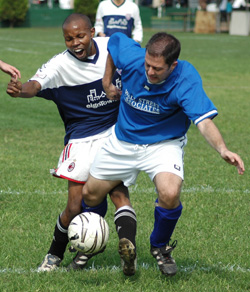

|
YC&AC, Sat 14th Oct. A deserved win by BFC with both teams struggling to get full squads out on the day.
BFC opened the scoring after 15mins from a contentious penalty decision and although WSG keeper Rob got a hand to it he couldn’t do enough to keep it out.
Up to this point in the game both sides were fairly evenly matched but with BFC now having the wind in their sails and a cracking shot minutes later from Evans left the Geckoes with a mountain to climb.
WSG fought their way back into the game and nicked a goal after some good build up play, but a lapse in WSG concentration straight from the restart allowed Terry Welliver some space on the edge of the area and his blistering strike from 20yards left WSG 3-1 down going into the break.
The 2nd half was a much more evenly fought affair and with BFC sitting on a comfortable 2 goal cushion and they were happy to sit back and take the pressure. The well organized BFC defence put up solid resistance and with WSG ever pressing forward it was inevitable that BFC would get another before the end killing off the tie. 4-1 was probably a fair result but it could have been a lot worse if BFC had converted all of the 3!! penalties that were awarded to them during the match.
Report by Gary Stout
|